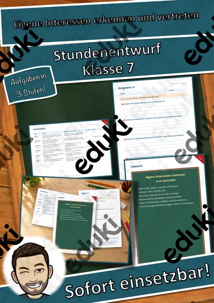
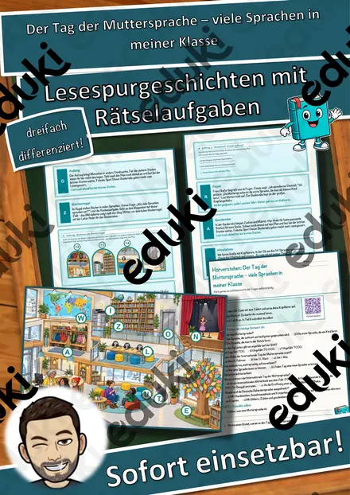
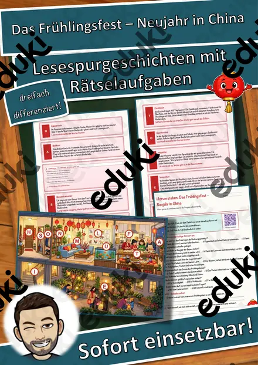

Sprechstunde - Ostern - Lass und reden
Mit dem Brettspiel Sprechstunde - Ostern - Lass und reden - erhalten Sie ein Spiel mit 20 unterschiedlichen Fragen zum Thema Ostern, welche Ihre Schüler zum Nachdenken und Reden animiert. Zusätzlich finden Sie auf der zweiten Seite noch Lösungsansätze zu den Fragen.
Ich wünsche Ihnen viel Freude mit dem Material!
FachEthik & Werte und Normen
KlasseKl. 5–7
SchulformSek I Mittlere Schulform
MaterialartUnterrichtsreihen, Merkblätter, Stationenlernen, Spiele
Ähnliche Materialien

Steckbrief zu Papst Leo XIV. inkl. Ausmalbilder

Bundestagswahl - Wahlprogramm der SPD

Was bedeutet Rassismus - inkl. Lernvideo/Erklärvideo für Kinder #demokratiestärken

Streit und Gewalt zuhause - Homeschooling

Gewalt an Frauen und Mädchen - Homeschooling

Eigene Interessen erkennen und vertreten – Stundenentwurf (Klasse 7)

Der Tag der Muttersprache – viele Sprachen in meiner Klasse – Lesespurgeschichte mit Rätselaufgaben (Klasse 5)
